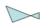

Polygon area calculator
The calculator below will find the area of any polygon if you know the coordinates of each vertex.
This will work for
triangles,
regular
and
irregular polygons,
convex
or
concave polygons.
It uses the same method as in
Area of a polygon but does the arithmetic for you.
Instructions
-
Enter the vertices in order, either clockwise or counter-clockwise starting at any vertex.
-
Enter the x,y coordinates of each vertex into the table. Empty rows will be ignored.
-
Click on "Calculate".
Unlike the
manual method, you do not need to enter the first vertex again at the end,
and you can go in either direction around the polygon.
The internal programming of the calculator takes care of it all for you.
There are other, often easier ways to calculate the area of triangles and regular polygons. See
Limitations
The calculator will produce the wrong answer for crossed polygons,
where one side crosses over another, as shown below.

Other Coordinate Geometry topics
(C) 2011 Copyright Math Open Reference.
All rights reserved